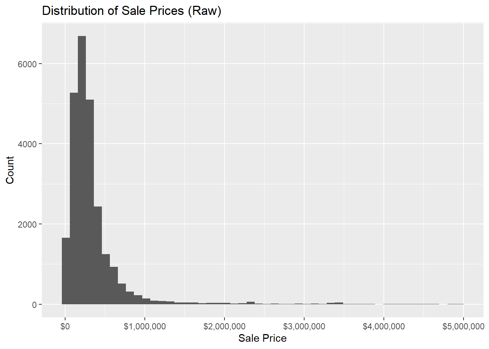
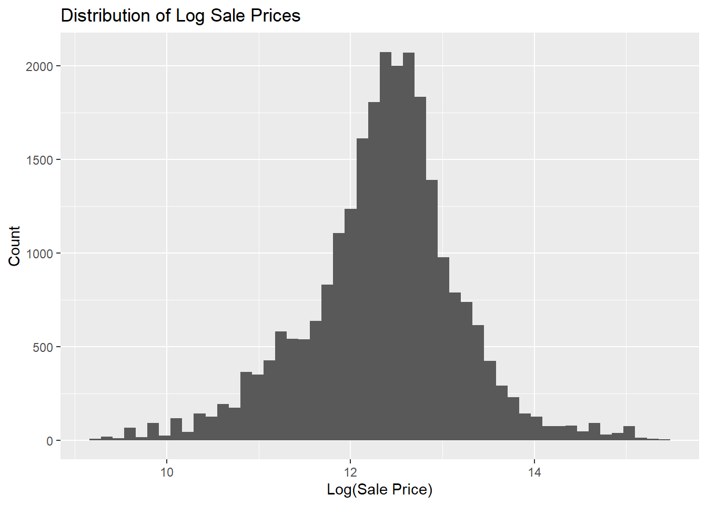
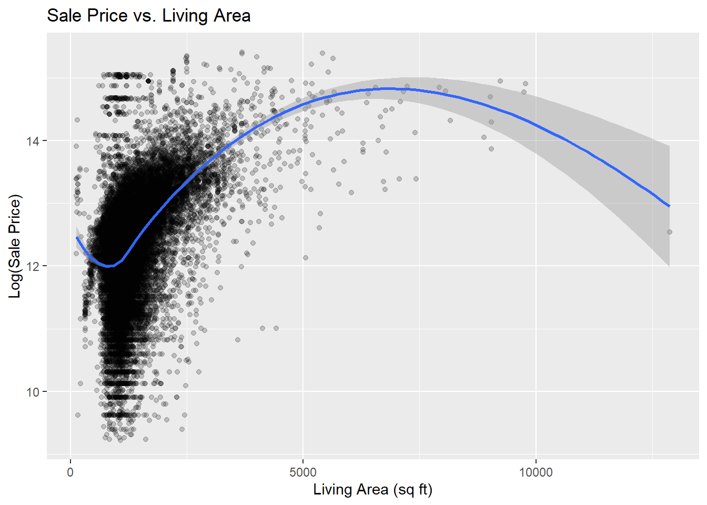
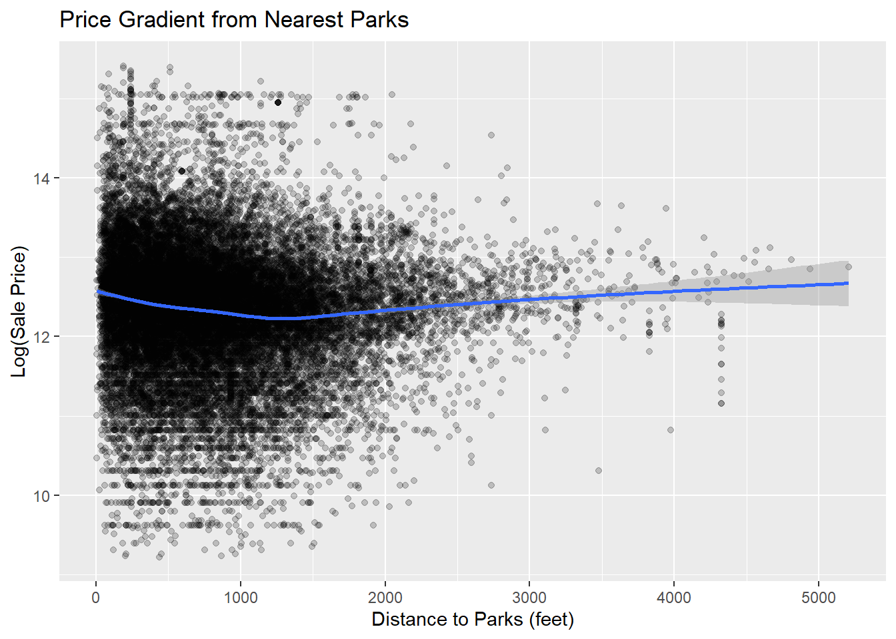
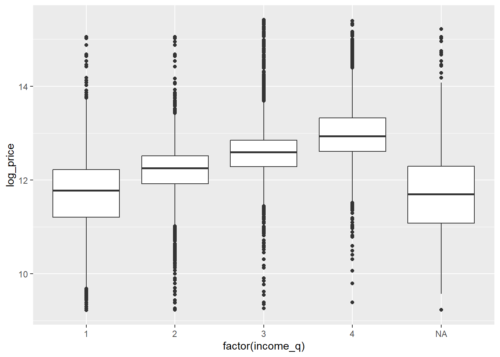

Midterm Challenge: Philadelphia Housing Price Prediction
MUSA 5080 - Public Policy Analytics
Overview
Due Date: Mar 16, 2026, 11:59PM
In-Class Presentations: March 17, 2026 (5 minutes per team)
Weight: 15% of final grade
Team: You’ll work with your table-mates as a team. Feel free to delegate. Everyone should upload their final products onto their own portfolio websites. Be sure to acknowledge your team-mates.
Submission Format:
Presentation Slides (.qmd → revealjs, ~10-15 slides) - Main deliverable (see my weekly lecture notes for inspiration on how to make slides!)
Technical Appendix (.qmd → HTML document) - Supporting details
The Challenge
You are consultancy (please name your consultancy) competing to win the bid to work for a project for the Philadelphia Office of Property Assessment. The city wants to improve its Automated Valuation Model (AVM) for property tax assessments. Your task is to build a predictive model for residential sale prices and present your findings to city officials in a 5-minute briefing.
Deliverables:
Presentation slides (10-15 slides MAX) - Your main findings for stakeholders
Technical appendix (HTML document) - All code, diagnostics, and detailed analysis
5-minute in-class presentation - Deliver your slides on October 27th
Your goal: Predict 2023-2024 home sale prices accurately while communicating findings clearly to a policy audience.
Content: ~10-15 (could be less!!) slides covering: 1. Research question & motivation (1-2 slides) 2. Data overview (1 slide) 3. Key visualizations (2-3 slides) 4. Model comparison results (1-2 slides) 5. Main findings (2-3 slides) 6. Policy recommendations (1-2 slides)
Audience: City officials who don’t know R or care about the nitty gritty of stats. They just want the best estimates possible.
No code in these slides - just polished visualizations and key takeaways
Part B: Technical Appendix (Supporting Documentation)
Format: Quarto HTML document
Example YAML:
---title:"Philadelphia Housing Model - Technical Appendix"author:"Your Name"format:html:code-fold: showtoc:truetoc-location: lefttheme: cosmo---
Content: All the technical details: - Complete data cleaning code - All EDA visualizations - Feature engineering code - Full model outputs - Diagnostic plots - Detailed interpretations
Audience: Data scientists and technical reviewers
All code visible - this is where you show your work
── Conflicts ────────────────────────────────────────── tidyverse_conflicts() ──
✖ dplyr::filter() masks stats::filter()
✖ dplyr::lag() masks stats::lag()
ℹ Use the conflicted package (<http://conflicted.r-lib.org/>) to force all conflicts to become errors
# A tibble: 2 × 2
Stage N
<chr> <int>
1 Raw 583588
2 Cleaned 25261
Code
# Load cleaned datasetsales_clean <-readRDS("sales_clean.rds")# Load secondary data on access + socioeconomics + amenities + spacial structure# Define ACS variablescensus_vars <-c(med_income ="B19013_001", # Median household incomemed_home_value ="B25077_001", # Median home valuetotal_pop ="B01003_001", # Total populationpoverty_count ="B17001_002", # Below povertypoverty_total ="B17001_001", # Poverty universetotal_edu ="B15003_001", # Education totaledu_bachelors ="B15003_022", # Bachelor'sedu_masters ="B15003_023",edu_prof ="B15003_024",edu_phd ="B15003_025",tenure_total ="B25003_001", # Total occupiedowner_occupied ="B25003_002"# Owner occupied)# Pull census dataphl_census <-get_acs(geography ="tract",variables = census_vars,state ="PA",county ="Philadelphia",year =2024,survey ="acs5",geometry =TRUE)
Getting data from the 2020-2024 5-year ACS
Downloading feature geometry from the Census website. To cache shapefiles for use in future sessions, set `options(tigris_use_cache = TRUE)`.
Reading layer `PPR_Properties' from data source
`C:\Users\Gab\OneDrive\Documents\SPRING 2026\CPLN5920_PPA\PPA_Portfolio\lab\Midterm\PPR_Properties\PPR_Properties.shp'
using driver `ESRI Shapefile'
Simple feature collection with 504 features and 25 fields
Geometry type: MULTIPOLYGON
Dimension: XY
Bounding box: xmin: -8380525 ymin: 4847239 xmax: -8344359 ymax: 4885123
Projected CRS: WGS 84 / Pseudo-Mercator
Code
# Distance to Center City (anchor to city hall)city_hall <-st_as_sf(data.frame(name ="City Hall",lon =-75.1636,lat =39.9526 ),coords =c("lon", "lat"),crs =4326)# Schools: https://opendataphilly.org/datasets/schools/schools <-st_read("Schools/Schools.shp")
Reading layer `Schools' from data source
`C:\Users\Gab\OneDrive\Documents\SPRING 2026\CPLN5920_PPA\PPA_Portfolio\lab\Midterm\Schools\Schools.shp'
using driver `ESRI Shapefile'
Simple feature collection with 490 features and 14 fields
Geometry type: POINT
Dimension: XY
Bounding box: xmin: -8378628 ymin: 4852555 xmax: -8345686 ymax: 4884813
Projected CRS: WGS 84 / Pseudo-Mercator
Code
# Convert sales data to sfsales_sf <-st_as_sf( sales_clean,coords =c("longitude", "latitude"),crs =4326)# Match CRS to NAD83 Pennsylvania South (feet), 2272sales_sf <-st_transform(sales_sf, 2272)phl_census_wide <-st_transform(phl_census_wide, 2272)stops <-st_transform(stops, 2272)parks <-st_transform(parks, 2272)city_hall <-st_transform(city_hall, 2272)schools <-st_transform(schools, 2272)# Join census data to sales_cleansales_sf <-st_join(sales_sf, phl_census_wide)
Phase 2: Exploratory Data Analysis
Create at least 5 professional visualizations:
Distribution of sale prices (histogram)
Geographic distribution (map)
Price vs. structural features (scatter plots)
Price vs. spatial features (scatter plots)
One creative visualization
For presentation slides: Select your best 2-3 visualizations that tell a compelling story
For appendix: Include all visualizations with detailed interpretations
Example presentation slide:
## Where Are Expensive Homes in Philadelphia?[Beautiful map showing price patterns]**Key Findings:**- Center City and University City command premium prices- River wards show emerging appreciation- Northeast Philadelphia remains most affordable
Code
options(tigris_use_cache =TRUE)options(tigris_progress =FALSE)# 1 Distribution of sale prices (histogram)library(ggplot2)ggplot(sales_sf, aes(x = sale_price)) +geom_histogram(bins =50) +scale_x_continuous(labels = scales::dollar) +labs(title ="Distribution of Sale Prices (Raw)",x ="Sale Price",y ="Count" )

Code
# Log sale pricesales_sf <- sales_sf %>%mutate(log_price =log(sale_price) )# 1 Distribution of log sale prices (histogram)ggplot(sales_sf, aes(x = log_price)) +geom_histogram(bins =50) +labs( title ="Distribution of Log Sale Prices",x ="Log(Sale Price)",y ="Count" )

Code
# Interpretation: Raw prices are heavily right-skewed, meaning there are a lot of expensive outliers in our housing sale price data. Log transformation produces a more symmetric distribution suitable for regression modeling.# 2 Geographic distribution (map)ggplot(sales_sf) +geom_sf(aes(color = log_price)) +scale_color_viridis_c() +labs(title ="Spatial Distribution of Home Prices (Log Scale)")+theme_minimal()
Code
# Interpretation: Home prices exhibit strong spatial clustering across Philadelphia.Higher-priced properties concentrate in Center CIty and Northwest neighborhoods, while lower-priced homes are more prevalent in North and West Philadelphia.# 3 Price v. structural features (scatter plots)# 3 Price v. total livable areaggplot(sales_sf, aes(total_livable_area, log_price)) +geom_point(alpha =0.2) +geom_smooth(method ="loess") +labs(title ="Sale Price vs. Living Area",x ="Living Area (sq ft)",y ="Log(Sale Price)" )
`geom_smooth()` using formula = 'y ~ x'

Code
# 4 Price v. spatial feature (scatter plots)# 4 Price v. distance to downtownsales_sf <- sales_sf %>%mutate(dist_downtown_ft =as.numeric(st_distance(geometry, city_hall)),dist_downtown_mi = dist_downtown_ft /5280 ) # Calculate distance to city hallggplot(sales_sf, aes(dist_downtown_mi, log_price)) +geom_point(alpha =0.2) +geom_smooth() +labs(title ="Price Gradient from Center City",x ="Distance to City Hall (miles)",y ="Log(Sale Price)" )
`geom_smooth()` using method = 'gam' and formula = 'y ~ s(x, bs = "cs")'
Warning: Removed 2 rows containing non-finite outside the scale range
(`stat_smooth()`).
Warning: Removed 2 rows containing missing values or values outside the scale range
(`geom_point()`).
Code
# Interpretation: The relationship between distance to City Hall and log sale price is nonlinear. Prices decline sharply within the first 2-4 miles from city hall, but begin to recover in outer neighborhoods.# 4 Price v. spatial features (scatter plots)# 4 Price v. distance to transit stopsstops_dist <-st_distance(sales_sf, stops) # Calculate distance to transit stopsget_knn_distance <-function(stops_dist, k) {apply(stops_dist, 1, function(distances){mean(as.numeric(sort(distances)[1:k])) })} # Create functionsales_sf <- sales_sf %>%mutate(stops_nn1 =get_knn_distance(stops_dist, k=1),stops_nn3 =get_knn_distance(stops_dist, k=3),stops_nn5 =get_knn_distance(stops_dist, k=5) ) # Create featuresggplot(sales_sf, aes(stops_nn1, log_price)) +geom_point(alpha =0.2) +geom_smooth() +labs(title ="Price Gradient from Nearest Transit Stops",x ="Distance to Transit Stops (feet)",y ="Log(Sale Price)" )
`geom_smooth()` using method = 'gam' and formula = 'y ~ s(x, bs = "cs")'
Warning: Removed 2 rows containing non-finite outside the scale range (`stat_smooth()`).
Removed 2 rows containing missing values or values outside the scale range
(`geom_point()`).
Code
# Interpretation: The relationship between distance to the nearest transit stop and sale price is nonlinear. Properties located extremely close to transit exhibit slightly lower prices, potentially reflecting noise or traffic externalities. Prices increase within a moderate walking distance range (500-1500ft), suggesting an accessibility premium. The relationship becomes unstable beyond 2000 ft due to limited observations.# 4 Price v. distance to schoolsschools_dist <-st_distance(sales_sf, schools) # Calculate distance to schoolsget_knn_distance <-function(schools_dist, k) {apply(schools_dist, 1, function(distances){mean(as.numeric(sort(distances)[1:k])) })} # Create functionsales_sf <- sales_sf %>%mutate(schools_nn1 =get_knn_distance(schools_dist, k=1),schools_nn3 =get_knn_distance(schools_dist, k=3),schools_nn5 =get_knn_distance(schools_dist, k=5) ) # Create featuresggplot(sales_sf, aes(schools_nn1, log_price)) +geom_point(alpha =0.2) +geom_smooth() +labs(title ="Price Gradient from Nearest Schools",x ="Distance to Schools (feet)",y ="Log(Sale Price)" )
`geom_smooth()` using method = 'gam' and formula = 'y ~ s(x, bs = "cs")'
Warning: Removed 2 rows containing non-finite outside the scale range (`stat_smooth()`).
Removed 2 rows containing missing values or values outside the scale range
(`geom_point()`).
Code
# Interpretation: The relationship between distance to the nearest schools and sale price is relatively weak and nonlinear. Properties immediately adjacent to schools do not exhibit a strong premium. Moderate proximity (2000-4000ft) is associated with slightly higher prices.# 4 Price v. distance to parksparks_dist <-st_distance(sales_sf, parks) # Calculate distance to parksget_knn_distance <-function(parks_dist, k) {apply(parks_dist, 1, function(distances){mean(as.numeric(sort(distances)[1:k])) })} # Create functionsales_sf <- sales_sf %>%mutate(parks_nn1 =get_knn_distance(parks_dist, k=1),parks_nn3 =get_knn_distance(parks_dist, k=3),parks_nn5 =get_knn_distance(parks_dist, k=5) ) # Create featuresggplot(sales_sf, aes(parks_nn1, log_price)) +geom_point(alpha =0.2) +geom_smooth() +labs(title ="Price Gradient from Nearest Parks",x ="Distance to Parks (feet)",y ="Log(Sale Price)" )
`geom_smooth()` using method = 'gam' and formula = 'y ~ s(x, bs = "cs")'
Warning: Removed 2 rows containing non-finite outside the scale range (`stat_smooth()`).
Removed 2 rows containing missing values or values outside the scale range
(`geom_point()`).

Code
# Interpretation: The relationship between distance to the nearest park and sale price is weak and nonlinear. Properties immediately adjacent to parks show a small premium, but the advantage flattens quickly beyond 1000ft. This suggests that park proximity may confer localized amenity benefits, but its explanatory power to sale price is limited to external factors.# 5 Price by income quantilesales_sf %>%mutate(income_q =ntile(med_income, 4)) %>%ggplot(aes(factor(income_q), log_price)) +geom_boxplot()

Code
# Interpretation: Sale prices increase monotonically across neighborhood income quartiles. The median log sale price in the highest-income quartile is substantially higher than in the lowest-income quartile, indicating strong neighborhood-level stratification in the housing market.
Phase 3: Feature Engineering (Technical Appendix)
Create spatial features: (these are examples below, but how you construct your model is up to your team)
Buffer-based features:
Parks within 500ft, 1000ft
Transit stops within 400ft
Schools, crime, etc.
k-Nearest Neighbor features:
Average distance to k nearest parks, transit, etc.
Census variables:
Join median income, education, poverty, etc.
Interaction terms:
Theoretically motivated combinations
Deliverable (Appendix only):
All feature engineering code
Summary table of features created
Brief justification for each feature
Code
#already done (K-nearest)# distance to parks# distance to schools# distance to transit stops# distance to center city #buffer-based# number of parks/schools/transit stops within ____ft# crime# car crashes# hospitals# monuments#census variables# income# education# poverty# owner occ# % rent burden#interaction terms# # Flag homes with number of parks within 500 ftsales_sf <- sales_sf %>%mutate(parks_500ft =lengths(st_intersects(st_buffer(geometry, 500), parks )),parks_1000ft =lengths(st_intersects(st_buffer(geometry, 1000), parks )) )# # Calculate distance to nearest school# schools_dist <- st_distance(sales_sf, schools)# # get_knn_distance <- function(schools_dist, k) {# apply(schools_dist, 1, function(distances){# mean(as.numeric(sort(distances)[1:k]))# })# } # Create function# # sales_sf <- sales_sf %>%# mutate(# schools_nn1 = get_knn_distance(schools_dist, k= 1),# schools_nn3 = get_knn_distance(schools_dist, k= 3),# schools_nn5 = get_knn_distance(schools_dist, k= 5)# ) # Create features# # summary(sales_sf %>%# st_drop_geometry() %>%# select(starts_with("schools_nn"))) # Summarize results
Phase 4: Model Building
Build models progressively: (for example)
Structural features only
Census variables
Spatial features
Interactions and fixed effects
For presentation slides: Show one comparison table (RMSE, R² for 4 different models you constructed in your process)
For appendix:
Complete model code
Full modelsummary output
Coefficient interpretations
Example presentation slide:
## Model Performance Improves with Each Layer| Model | CV RMSE (log) | R² ||-------|---------------|-----|| Structural Only | 0.42 | 0.61 || + Census | 0.38 | 0.69 || + Spatial | 0.31 | 0.78 || + Interactions/FE | 0.26 | 0.84 |**Bottom line:** Neighborhood effects matter most!
Phase 5: Model Validation
Use 10-fold cross-validation: - Compare all 4 models - Report RMSE, MAE, R² for each - Create predicted vs. actual plot
For presentation slides: Final CV results table (shown above) + one compelling visual
For appendix:
Complete CV code
Detailed results
Predicted vs. actual scatter plot
Discussion of which features matter most
Phase 6: Model Diagnostics (Technical Appendix Only)
Check assumptions for best model:
Residual plot (linearity, homoscedasticity)
Q-Q plot (normality)
Cook’s distance (influential observations)
Deliverable (Appendix only):
All 3 diagnostic plots
Interpretation of each
How you addressed violations (if any)
Note: Don’t include diagnostic plots in presentation - too technical!
Phase 7: Conclusions & Recommendations
Answer these questions:
What is your final model’s accuracy?
Which features matter most for Philadelphia prices?
Which neighborhoods are hardest to predict?
Equity concerns?
Limitations?
For presentation slides: 1-2 slides with clear, concise answers (bullet points)
For appendix: 2-3 paragraphs with detailed discussion
Example presentation slide:
## Key Findings & Recommendations**Model Accuracy:** RMSE = 0.26 (log scale) ≈ 26% typical error**Top Predictors:**- Neighborhood fixed effects (largest impact)- Square footage (β = 0.0003, p < 0.001)- Distance to transit (β = -0.05, p < 0.001)**Recommendations:**✓ Current AVM undervalues transit-accessible properties ✓ Model struggles in rapidly gentrifying neighborhoods
Submission Requirements
What to Submit (by 11:59 PM, March 16, 2026)
Upload to Canvas - A link to your portfolio that Contains
Data files OR clear download instructions in appendix
For Teams: Use LastName1_LastName2_Presentation.html
In-Class Presentation (March 17, 2026)
Format: 5 minutes per team
What to present:
Walk through your presentation slides. Choose your team’s spoke’s person or take turns You’ll all stand up there and try to look calm, confident, & collected.
Hit the highlights - research question, key viz, model results, recommendations
Speak to a policy audience (your classmates are pretending to be city officials)
Be ready for 1-2 questions
You are trying to win the bid! Convince the audience of your agency’s work.
Slide 8: Model Performance - Final RMSE: 0.26 (log scale) - Translation: ~26% typical error - Beats baseline by 40%
Slide 9: Hardest to Predict - [Visualization of residuals by neighborhood]
Slide 10: Recommendations
Slide 11: Limitations & Next Steps
Slide 12: Questions? - Thank you - [Contact info]
Tips for Success
Start Early
Data cleaning always takes longer than expected
OpenDataPhilly can be slow to download
Leave time for troubleshooting AND RENDERING!!!
Check Your Work
Organize your file directory from the beginning.
Run your entire .qmd file from scratch with a clean workspace before submitting
Make sure all visualizations display
Check that your narrative flows logically
Frequently Asked Questions
Q: Do I have to create both slides AND an appendix?
A: Yes! Slides are your main deliverable (present findings). Appendix proves you did the work correctly.
Q: Can code appear in my presentation slides?
A: NO! Slides are for city officials. All code goes in the technical appendix.
Q: How many slides should I have?
A: 10-15 maximum. Quality over quantity. Each slide should have a clear purpose.
Q: Can I use a different city?
A: No, everyone uses Philadelphia for comparability.
Q: How do I make my .qmd render as revealjs slides?
A: Use format: revealjs in your YAML (see template above). Test it early! See the .qmd files behind my lecture slides for examples.
Q: My presentation is 8 minutes. Is that okay?
A: NO! You must cut it to 5 minutes. Practice and trim ruthlessly.
Q: Should I include all 5 EDA visualizations in my slides?
A: No! Slides should have your best 2-3 visualizations. Put all 5 in the appendix.
Q: My RMSE is 0.35 in log scale. Is that good?
A: Depends on your data, but 0.25-0.45 is typical for hedonic models. Compare to your baseline or put your data back into dollars!
Q: Should I remove all outliers?
A: No! Only remove obvious errors. Use log transformations to handle legitimate outliers.
Q: What if my code works on my computer but not when I render it?
A: Start fresh, restart R, render in a clean session. Check for hard-coded paths. Be aware that sometimes quarto will point to an error on one line, but actually the error is somewhere else.
Q: Can I use ChatGPT/Claude to write my analysis?
A: You may use AI for debugging code, but NOT for writing your analysis. I want to read your interpretation in your own words.
Q: How formal should my presentation be?
A: Professional but not stuffy. Like you’re briefing a city council member who’s smart but doesn’t know statistics.
Q: What happens if I go over 5 minutes?
A: I’ll politely cut you off and you’ll lose points. Practice with a timer!
Acknowledge how you used AI in your work and which AI you used (For example, Claude helped me today in coming up with a draft of this assignment, but I edited it thoroughly!)